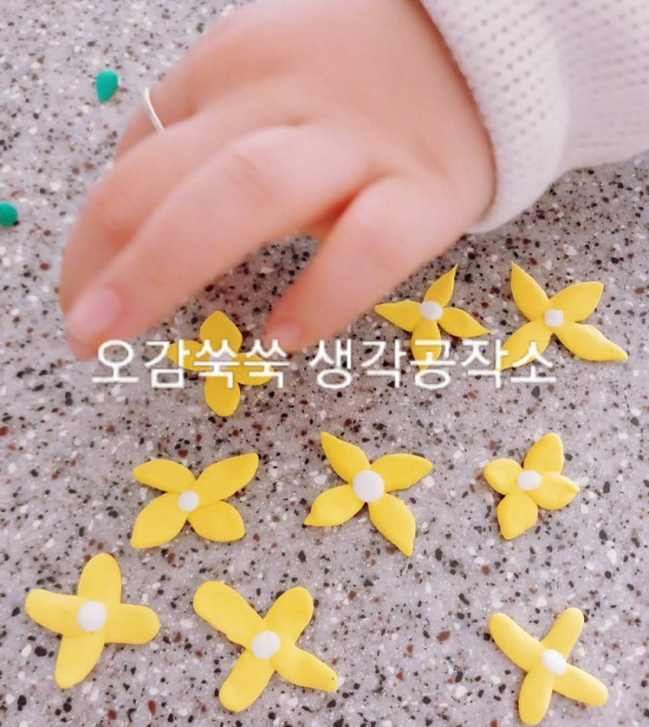
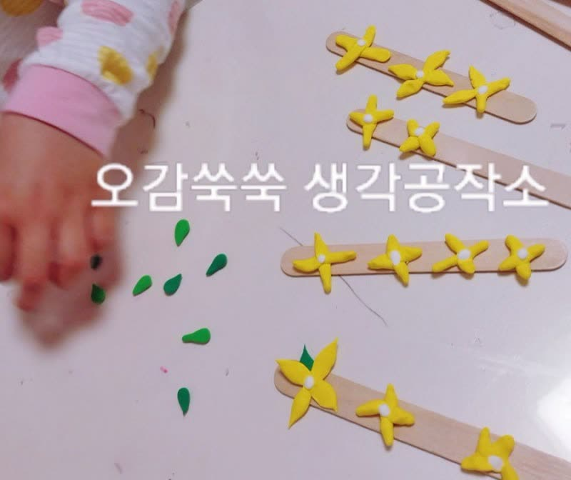

← 활동 이야기
2023.05.09
아기 손과 뇌의 발달
손은 제2의 뇌라고 할 만큼 손의 감각을
담당하고 있는 뇌의 부위는 매우 넓습니다.
이는 다른 신체 부위에 비해 강각 기관이
많이 모여 있고, 민감하다는 뜻입니다

실제로 사람들은 손으로 많은 일을 하고,
손의 감각을 통해 많은 것을 알아 갑니다.
특히 영아기는 감각을 통해 세상을 알아 가는 중요한 시기이기 때문에 손의 사용을 통한 감각적 경험이
매우 중요합니다.

따라서 궁금한 것이 있으면 손부터 뻗어 보는
영아기에 손을 사용한 놀이를 많이
할 수 있게 도와주는 것은
아이의 뇌 발달에 큰 도움이 됩니다
인천시 어디서나! 오감쑥쑥! 생각쑥쑥!
함께해요 오감쑥쑥서비스
💡 생각공작소
032-277-2007